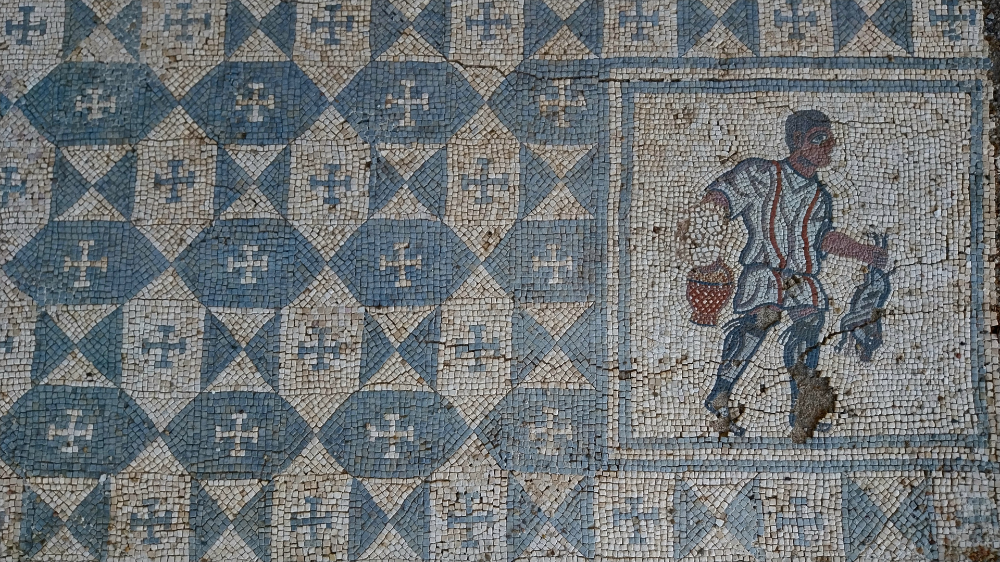
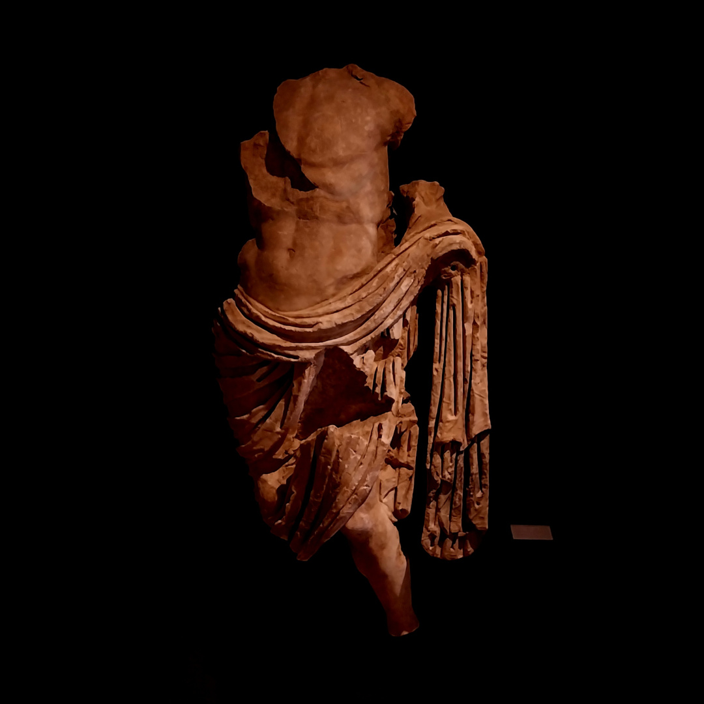
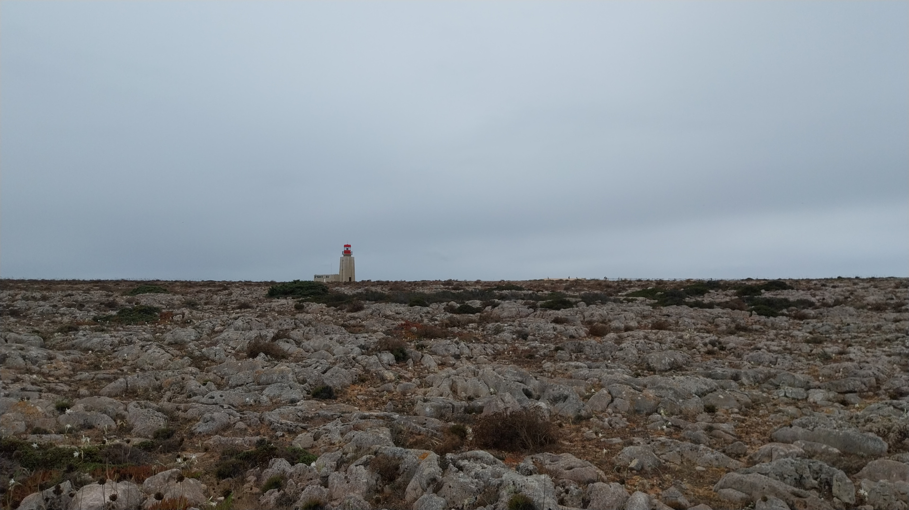
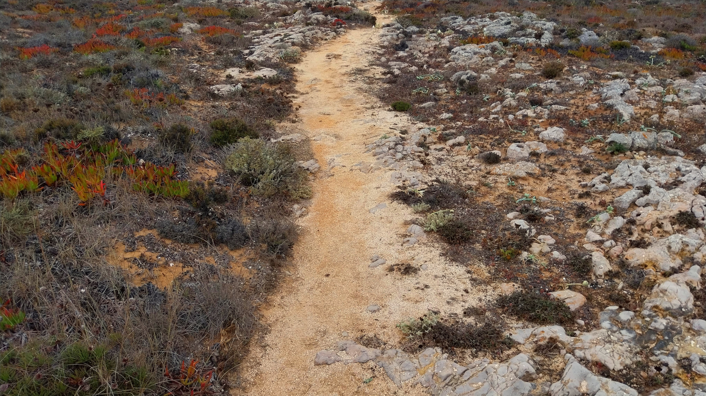
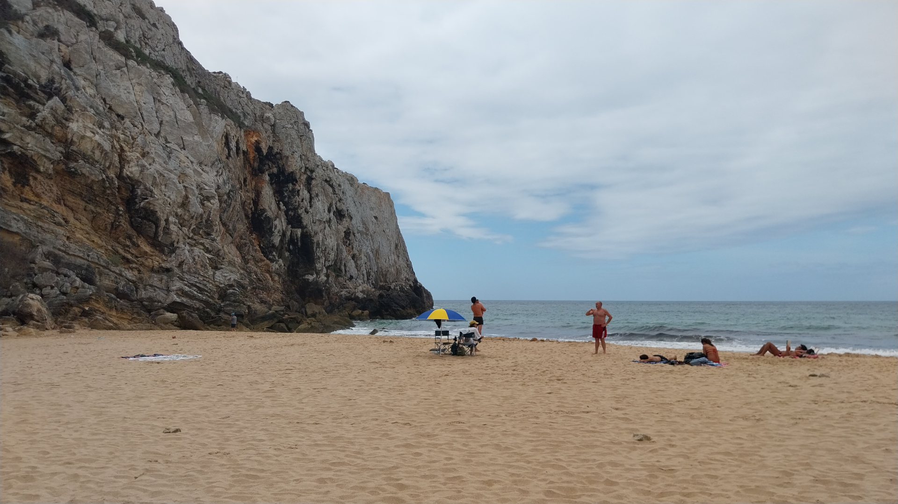
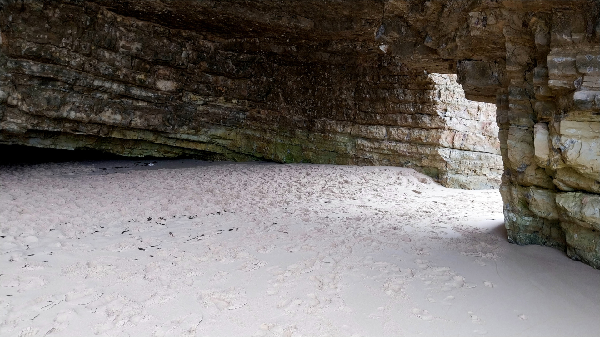
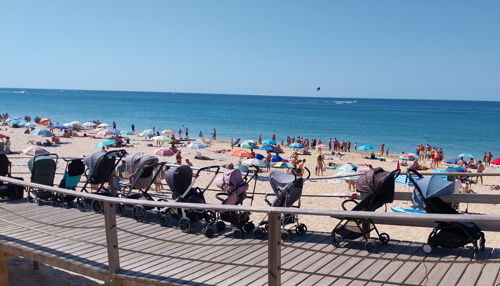

bogothoughts







Babies on the beach!


Found this photo while digging through the archives. The road to Cluj had its pitfalls...
Gostei muito de algumas das quadras de S. João que vi e decidi fazer uma pequena colectânea. Também me diverti muito a fazer as ilustrações, em colaboração com a Sra. S, e acho que algumas merecem ser reproduzidas aqui :)


I can't stop myself from giggling whenever I read this part of a tutorial on camera calibration with OpenCV. Hope you enjoy it :)
"With these data, some mathematical problem is solved in background to get the distortion coefficients. That is the summary of the whole story."

Proud of this little guy.
É sabido de todos os que lavam a roupa que as meias tem tendência para desaparecer na máquina. Tive, há uns tempos, uma revelação que me atrevo a classificar como genial: se calhar passa-se o mesmo com as cuecas, mas como não têm par correspondente ninguém dá pela sua falta. Enquanto matutava nisto, lembrei-me também de que é estranho chamarmos "par de cuecas" a uma singular cueca.
Pareceu-me que com estes dois ingredientes conseguiria compor uma excelente história. Infelizmente, por mais que tentasse, não houve nenhuma versão com que ficasse particularmente satisfeito, mas reproduzo abaixo um rascunho que não deixa de ter alguma piada.
Era uma vez uma cueca preta. Esta cueca, como é hábito das cuecas, vivia na gaveta de um armário. Não gostava de aventuras e tinha em geral uma vida calma: passava a semana a repousar, até chegar a sua vez de entrar em ação, e depois era lavada na máquina. Aquilo que mais a incomodava era o cesto da roupa suja - era obrigada a conviver com outras roupas igualmente mal-cheirosas, até chegar a lavagem. Mas a espera era proveitosa, porque se seguia a sua parte favorita: a lavagem na máquina, que consistia num belo banho de água quente seguido de massagens na centrifugadora. Era, tudo considerado, uma cueca bastante feliz e respeitada.
A cueca vivia a sua boa vida já há uns meses quando se deu o desastre: num belo dia de primavera, a cueca revirava-se na máquina de lavar, regojizando com a perspetiva de apanhar sol no estendal, qual lagarto, quando ficou presa num canto do tambor. Ah, perdição! Por mais que tentasse não conseguia soltar-se. Quando a lavagem acabou, o dono abriu a porta da máquina, retirou a roupa e não reparou na cueca, enfiada no seu cantinho!
Foi assim que começou o período mais negro na vida da nossa cueca. A semana, em vez de ser passada no conforto da gaveta, era passada na solidão do tambor da máquina, escuro, frio e húmido. Esta solidão prolongou-se durante semanas, e a cueca começou a perder a racionalidade. Falava sozinha, e as outras roupas, nas suas breves passagens pela máquina, começaram a escarnecer dela. Chamavam-lhe, em tom de gozo, par de cuecas.
Esta infeliz aventura, como quase todas, chegou ao fim. Não há nada de particularmente glorioso neste final: o seu humano reparou na cueca, entalada no canto, e depois de alguns puxões - diga-se de passagem que muito a magoaram - conseguiu soltá-la. Pouco mais há a dizer, a não ser notar que ela nunca mais se livrou da sua alcunha de par. Não há nesta história qualquer moral, porque se trata apenas de uma sucessão de acasos, mas peço-lhe a si, leitor, que da próxima vez que chamar a uma singular cueca "par de cuecas" se lembre de onde vem essa expressão.

I've spent an unreasonable number of hours trying to implement closures in beetle. It is (I believe) now working, but it was probably the most difficult program I have ever built. There's still a lot of cleanup to do, but first I'll have some rest :)


I've been fiddling around with beetle: the programming language that embraces bugs. Yesterday was a historic day: I had the first segfault in my own programming language! (Infinite recursion, if you're wondering)

bogodictionary is now online!


We're participating in the Bosch Future Mobility Challenge this year. It's been frustrating at times, but it is also very fun when things work. The past few days required some construction work.


Fiddling around...

This game feels like a living piece of art.

Mother Nature has learned how to use CSS gradients.

Não há, caro leitor, melhor país que Portugal para se ficar fechado fora de casa. Declaro-o sem qualquer leviandade - estou inteiramente ciente do peso desta afirmação e integralmente preparado para a defender com base apenas nos factos.
Digo-o porque não há outro lugar no mundo em que, ficando-se preso fora de casa já depois das onze da noite, no silêncio de uma aldeia minhota, sem carteira, telemóvel, ou chaves do carro, a vizinha do lado esteja ainda acordada e nos abra a porta. Ou, mesmo que haja, essa hipotética vizinha num hipotético país certamente não terá feito a matança do porco nessa tarde. Ou, supondo nós que isto podia acontecer num outro país qualquer, a vizinha não se lembraria de um serralheiro que, já estando deitado, se levantaria, dispor-se-ia a trepar o muro e nos abriria a porta, recusando-se a receber pagamento.
Dirá agora o leitor que conhece bem o país X, e que decerto o país X tem também gente boa que faz a matança do porco e acolhe os vizinhos, que o país X tem também serralheiros que se movem pela bondade, e que eu exagero. Ao que eu respondo: tudo isso poderá ser verdade, mas no país X a vizinha não nos dá rojões e batatas para fritar, nem febras para o almoço, nem nos faz prometer que voltaremos no dia seguinte para testemunhar o enchimento dos chouriços, chouriças, chouriças de sangue, chouriças de massa e chouriças de ossos.
Concluindo, caro leitor, muito nos podemos queixar do nosso país, e com certeza razões para isso haverá, mas que fique bem assente que não há melhor sítio que Portugal para ficar preso fora de casa.
There is much to be said about a language whose "hello, world" is only taught in the eighth week, and I'm not the right person to talk about it, but one must admit that there is an elegancy in Haskell that I have not yet found in other languages. Just look at this merge sort!
sort :: [Int] -> [Int]
sort [] = []
sort [x] = [x]
sort list = merge (sort left) (sort right)
where left = take half list
right = drop half list
half = length list `div` 2
merge :: [Int] -> [Int] -> [Int]
merge [] right = right
merge left [] = left
merge (x:xs) (y:ys)
| x <= y = x : merge xs (y:ys)
| otherwise = y : merge (x:xs) ys


Dear reader, please pardon my swearing in this post. If you are like me (I know few people are...), you'll find it appalling. But this corner of the Internet seems to like it a lot, and the terms are quite expressive :)
I've been thinking a lot about the enshittification of the Internet and the needless complexity of modern websites. I stumbled upon Motherfucking Website and started noticing how often simple pages are bloated in the name of "prettiness", resulting in something much worse than a simple page would do.
A while ago, though, I realized that I was guilty too! This very website, which aims to be the pinnacle of minimalism, was built using React! I used close to none of the features React is useful for, and was essentially writing HTML in a very complex way. As such, I took some time this Christmas to rewrite it using plain, old, boring Hypertext Markup Language.
The Internet was built as a simple place and I'd like to keep it so. Enjoy your new website :)


Havia um homem que queria saber como era adormecer. Queria descobrir como era a transição entre acordado e dormir, entre consciente e sonhar. Não era uma dúvida imperativa, nem mesmo uma questão relevante, mas, embora não gostasse de o admitir, começava a sentir-se frustrado por ainda não ter uma resposta.
Um dia, quando estava ocupado com os seus pensamentos noturnos, o homem sentiu um peso pousar-se-lhe em cima. O corpo colava-se à cama, os pensamentos caíam no vazio. O homem sentiu então que desta vez ia descobrir. Uma leve excitação começou a despontar, mas foi rapidamente empurrada para o sítio de onde tinha vindo, para não espantar o sono. Por fim, aquilo que tanto esperava aconteceu, e o homem adormeceu. Adormeceu satisfeito, porque tinha esclarecido a sua questão.
No dia seguinte levantou-se com energia, porque dormira uma noite muito agradável. A descoberta, porém, tinha-se misturado com os sonhos e evaporado da memória. Nessa noite, ao deitar, o homem sentiu-se um pouco incomodado por ainda não ter descoberto como era adormecer.

Every once in a while, a person ascends to a level that we, mere mortals, can only dream about. Those extraordinary beings distinguish themselves by the audacity of their deeds or the warmth of their heart. I was honored to meet LuisGoncalves05, who recently took that path by implementing a Red-Black Tree.

A while back, I shared an image of a grayscale taxi. That was the start of my very rudimentary raytracer (which, at the time, didn't even do so much as tracing the rays). The caption read "It'll probably turn out to be another abandoned project". But, alas, I got to a point where it's acceptable to make the raytracer public! It just took a translation from C into Rust... As a tribute to its slowness, the raytracer's name is Caracol (Caracol's repository).


One of my many useless feuds concerns the spelling of "Hello, World!". For those unfamiliar, this sentence first appeared as an example on the iconic book The C Programming Language, which was used to teach C back in the time when books were used for those things. C was unreasonably successful, and the book became famous for its concise and effective examples.
The sentence now comes in many shapes and colors: "Hello world!", "Hello World!", "Hello World", etc. Wikipedia titles its page "Hello, World!". It's impressive how many different ways there are of putting these two simple words together.
My favorite one used to be "Hello World!". Then, about a year ago, I discovered that, in The C Programming Language, Brian Kernighan and Dennis Ritchie opted for "hello, world". I started by disliking this version. But, then, if we are going to keep using this phrase for the sake of tradition, we might as well honor the original one. These days, I can't suppress a twinge of irritation whenever I see another version. Ewwww, such ignorance...
Unfortunately, this story is much too forgotten. Given the book's status as the book on one of the most successful programming languages ever to exist, and the phrase's place as the most famous sentence in the world of computer programs, "hello, world" ought to see its history a little more valued. So, if you can, spread the word!

Aqui se discutiram temas de sobeja importância, desde o jogo do Sporting nessa noite até gastar a reforma em BenficaTV, passando pela melhor forma de escolher um melão.

Ubuntu produced this piece of art, The Hardworking CPU, on a day my computer was under serious pressure.

Trying to shoot a few rays. It'll probably turn out to be another abandoned project, but it's been fun so far.

I just realized that floors in a building are zero-indexed - ground floor being zero. No more Matlab for civil engineers, I guess...


# Spy's work is dull
I wrote these few lines for a programming exercise. I must admit they make me quite proud:
"As a spy, your work involves dull tasks like car chases or attending secret meetings. Every once in a while, though, you get an interesting job which requires you to program."

Working on a new app. Placeholder name is Blocks.
Porto's public bus company has a new route numbered 404. My friends aren't as delighted by this as I am...


A short while ago, This American Life announced the release of their premium subscription, This American Life Partners. They missed a wonderful opportunity to call it This American Dream.


# Personality in your code
I've been programming for a few years now, and every once in a while this question pops up: how much personality should my program have?
The first time I remember thinking about this was shortly after I released Musicly. I was showing my dad around the app, and at some point he noticed a joke I'd made on the search bar. He thought that I should remove it since jokes lack professionalism and could convey the wrong impression to users. Sure enough, I took it out.
I kept on programming, and whenever the choice of a humorous sentence or feature came up, I used to stick to the safe and dull side of professionalism. And then I came across this video on Computerphile which totally changed my mind on the subject. Marco Arment's argument that indie developpers should embrace their personality resonated with me and made me proud to add a personal touch to my apps.
Today, I firmly stand on the personal side of the discussion. It's fair to say that this video has shaped my behavior in the programming world. I hope you give it a try!
P.S.: There are three other videos on Computerphile with Marco Arment. All are very interesting and funny to watch - I can't help but love this guy! #1 #2 #3


# Assassínio
Um! Dois! Três! Com três fortes golpes desfigurei-a por completo. Observei-a enquanto a sua vida se esvaía. Aqui e acolá, algumas partes do seu corpo ainda estrebuchavam, como se possuídas por algo. Vendo terminar assim uma vida, um sentimento de culpa começou a apoderar-se de mim. Deveria ter tido piedade?
Quando os últimos movimentos findaram, limpei o local do crime metodicamente. Primeiro recolhi os pedaços do corpo num saco de lixo. Depois, cuidadosamente, raspei as marcas de sangue das paredes do chuveiro com papel higiénico. Por fim, lavei com água abundante a arma do crime, para não deixar indícios. Desliguei as luzes e abandonei o local.
Assim termina a vida de uma centopeia.